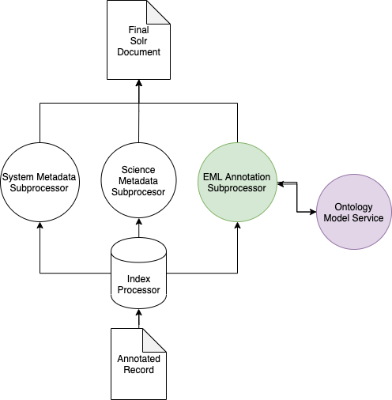
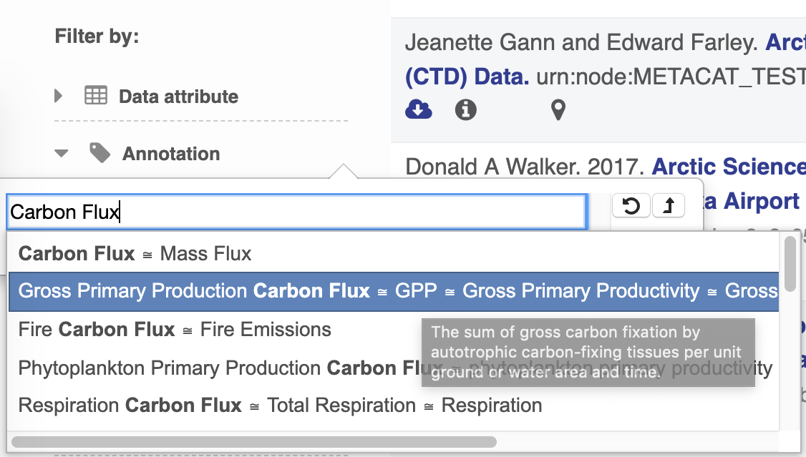
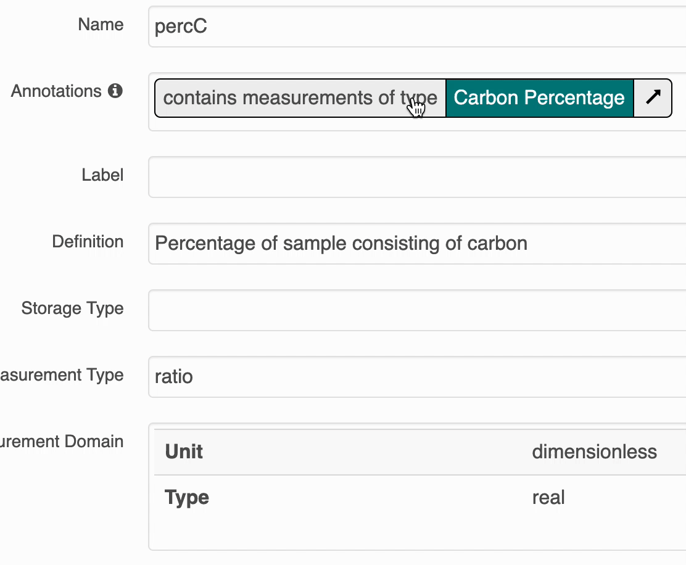
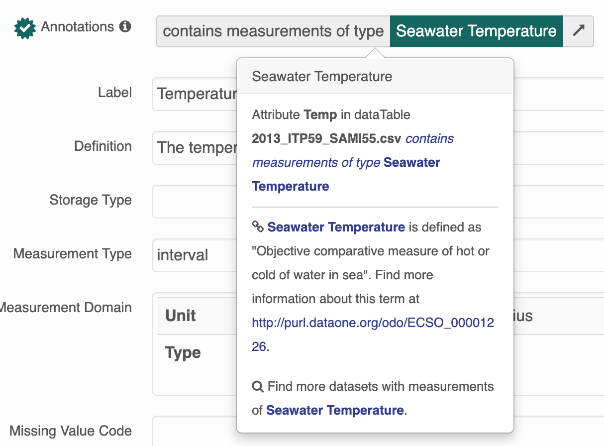

Semantic Search Design¶
Overview¶
Semantic search improves both search and display of metadata records over what was previously possible. For example, with traditional, free-text search, if a metadata record described a dataset on American green tree frogs (Hyla cinerea) but never included the term “amphibian” in the metadata record’s text, a free-text search for “data on amphibians” may not return the record. With semantic search, we can index ahead of time that fact that American green tree frogs are amphibians using a suitable knowledge graph and the record would be returned.
Note
Although designed to be generally applicable, only annotations expressed with the EML 2.2.x semantics module are parsed. See What’s New in EML 2.2.0.
Annotations cane be expressed in various locations of EML 2.2.x records. For example:
<attribute id="myatt">
...
<annotation>
<propertyURI label="of characteristic">
http://ecoinformatics.org/oboe/oboe.1.2/oboe-core.owl#ofCharacteristic
</propertyURI>
<valueURI label="Mass">
http://ecoinformatics.org/oboe/oboe.1.2/oboe-characteristics.owl#Mass
</valueURI>
</annotation>
...
</attribute>
The above annotation asserts that the attribute “myatt” is “of characteristic” “Mass”. Both terms are defined in the OBOE ontology with specific definitions and logical relationships with other terms. After parsing and indexing, annotations such as this annotation are both searchable and displayed on dataset landing pages.
Indexing¶
Harvesting of an EML record with one or more annotations triggers EMLAnnotationSubprocessor (in addition to other applicable subprocessors). This does tthe following:
Executes the XPath
//annotation/valueURIon the recordPerforms query expansion on the result of (1) to include all superclasses of each term
Stores the expanded result in the
sem_annotationfield in the search index
See below for a simplified architectural diagram:
OntologyModelService¶
In the above diagram, the EMLAnnotationSubprocessor uses the OntologyModelService to perform query expansion.
The OntologyModelService implements a simple Jena OntologyModel which loads a set of Whitelisted Ontologies at startup into a single Jena OntologyModel which can be queried by other index subprocessors at index time.
Each term is turned into a Property Path query to find all superclasses of the term:
SELECT ?sem_annotation
WHERE {
<$CONCEPT_URI> rdfs:subClassOf* ?sem_annotation .
}
The current architecture is flexible enough to allow other types of SPARQL queries to be run on annotations.
Search Interface¶
Annotation Search Filter¶
The search UI leverages BioPortal’s API and their tree view widget to provide users with a way to find terms and search by them. At current, only terms from ECSO’s MeasurementType tree are viewable and searchable.
Annotation Popovers on Landing Pages¶
The search UI provides popovers on landing pages for annotations and provides an enhanced tooltip if the term is present in BioPortal. When the popover is clicked, a request is made to BioPortal’s class search API to find a defintion for the term and the popover is updated with the found defintion:
If the term is not found in BioPortal, the popover is still shown and works mostly the same, minus the added definition.
Whitelisted Ontologies¶
For performance and security reasons, the OntologyModelService doesn’t supporting loading arbitrary ontologies at query time. Instead, a set of whitelisted ontologies was established:
ECSO: (The ECcoSystem Ontology)
ENVO (Environmental Ontology)
OBOE (The Extensible Observation Ontology)
ProvONE (The DataONE PROV Ontology)
These are loaded into a Jena OntologyModelService at startup and are available for query expansion when new records are indexed.
Adding New Ontologies¶
When EML records are annotated with terms not from the set of Whitelisted Ontologies, annotations, the search catalog will work slightly different than the case where annotations use terms from the whitelist.
Users won’t be able to search for those records by the term URI or label through the search interface because the Annotation search only supports searching for
ECSOMeasurementTypeannotations at this time.Users will be presented with only a basic tooltip for the term on the record’s landing page, see:
Instead of the more helpful tooltip:
To add an ontology, you must:
Check in a copy of the ontology’s OWL file or files to
src/main/resources/ontologiesinD1_CN_INDEX_PROCESSOR.Add a reference to
src/main/resources/application-context-ontology-model-service.xmlD1_CN_INDEX_PROCESSORin theontologyListandaltEntryListproperties.